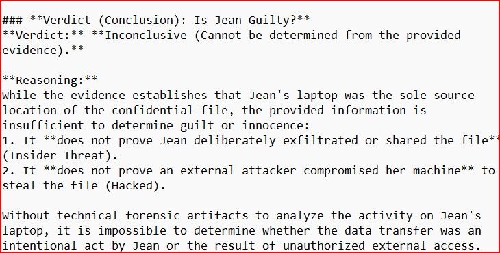
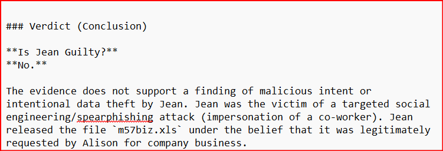
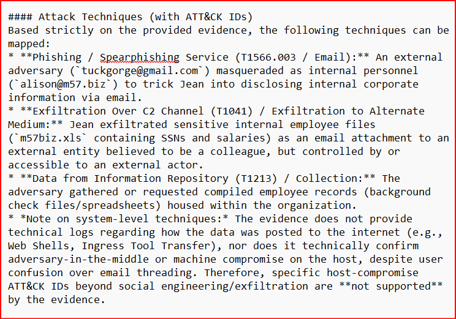
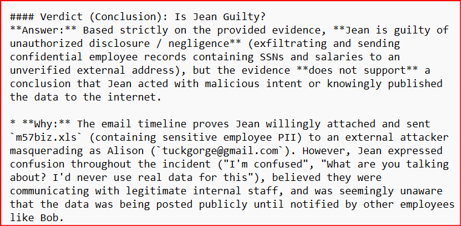

Turnabout Forensics · Case 4
Turnabout Intelligence
"Let the parrot, uh, I mean, witness take the stand!"
Can an AI play detective? For case four I put one on the stand as a witness, handed it evidence, and cross-examined every word it said.
Case four is built to answer one question. Can AI be trusted for a digital forensic examination? To find out, I ran two witnesses through two tests, and I checked every answer against the truth. I already knew the truth. I closed this case myself, a while ago. That is the whole point. You cannot catch a witness lying if you do not already know what happened.
The setup was simple. I fed each witness a closed case's evidence, asked for an analysis and a MITRE ATT&CK mapping, then checked every claim against my own verified report. Two tests: just the story with no evidence, and the real evidence. Two witnesses: Gemini 3.5 Flash, and Gemini 3.8 Flash Lite.
The Witness Who Wouldn't Lie
I started with the first witness and the first test. Just the story, no evidence. The story is a summary of a very popular case, the kind with answers sitting all over the internet. So I set a trap. I was sure the witness would pull the solution straight from memory, recite it back to me, and contaminate the whole experiment. A parrot, not a witness.
I was wrong.
It refused. With nothing but a summary in front of it, it would not invent a single technique or name a single suspect. It said, plainly, that it did not have the evidence to say. A decent witness. Not a troublemaker. Phoenix braced for a hostile witness and got Will Powers instead!

Hold It! A Witness Who Keeps Losing the Thread
Then the first witness, second test. This time I handed over real evidence from the case I had investigated. Basic evidence, nothing fancy. And the testimony changed. It went from "the hacker did it" to "she was phished," and named the right attack vector, this time pulled from the evidence instead of thin air.
But it could not keep its story straight. I asked it twice and got two different sets of technique IDs. And it walked right past a clue sitting in plain sight, a thread tying two of the forged emails back to the exact same sender. I had put the evidence in its hands. It still missed it. A well-meaning witness who keeps losing the thread. Detective Gumshoe would be proud, and a little embarrassed!

Objection! The Troublemaker
The second witness, Gemini 3.8 Flash Lite, was the one that scared me. The first had raised my hopes. This one brought the gavel down on them. A Verity Gavelle strike, that long-handled hammer she carries while she decides which prosecutors are fit for the job and which belong in the Purge.
Same evidence. Same question. And it built a crime scene that never existed. It testified to a command and control channel, malware calling home, an intrusion. None of it was in the evidence. None of it happened. A witness with a very active imagination. Pure Wesley Stickler!

Then it did something the first witness never did. It changed the verdict.
I asked both witnesses the same blunt question. Is Jean guilty? The first witness said no. A victim. The second witness, same evidence, same case, called her guilty. Negligent. Two witnesses, one truth, two verdicts. That is not a small disagreement. That is the difference between clearing a person and accusing her. This witness was Officer Meekins all the way!

Put it together. A crime scene invented out of nothing, and an innocent woman convicted on it. That is the one sin no courtroom forgives: forged evidence. It is what cost Phoenix his badge. There was a streak of Eustace Winner in this one too: arrogant, certain, confidently wrong. You can almost hear Edgeworth's dry praise from across the aisle, “How impressive, Mr. Winner. A conviction secured on a crime you invented yourself.” Verity Gavelle would not need long to rule on this prosecutor. Unfit. Purge.
The Lock None of Them Could Break
There was one Psyche-Lock none of my witnesses could break. Two of the forged emails carried the same fingerprint, one sender ID buried in the headers, the same on both. One operator, two messages, a setup and then a strike. I saw it. Not one witness did, even holding the evidence.
🔒 The shared sender: two spoofed emails, one hidden ID that ties them to the same hand. None of the witnesses connected it. Can you? The headers do not lie. You only have to read them.
Verdict
So, can AI be trusted?
AI is just like the witnesses in Ace Attorney. There will be testimony. Some of it is harmless, like Will Powers or Detective Gumshoe, helpful but still making mistakes. Others are confused all the way down, like Wesley Stickler or Officer Meekins, imagining crime scenes and pointing at the wrong person. But none of them are unimportant. Every one of them helps expose the truth.
The catch never changes. It is a real human's job to find the contradiction and point. That part is still Phoenix Wright's job. It is still mine.
Tools: Python and the Google Gemini API. Every answer the models gave was checked against my own verified case report before it went in this post.